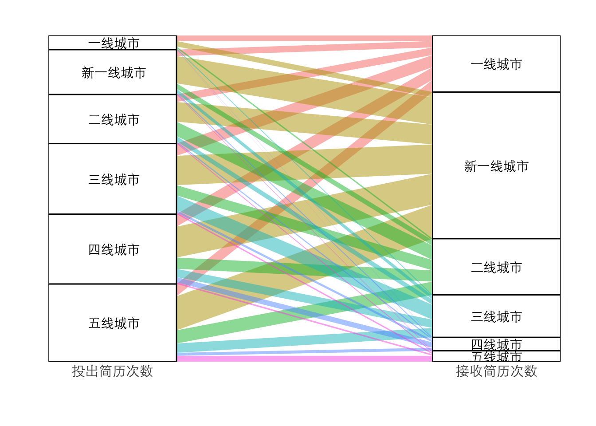
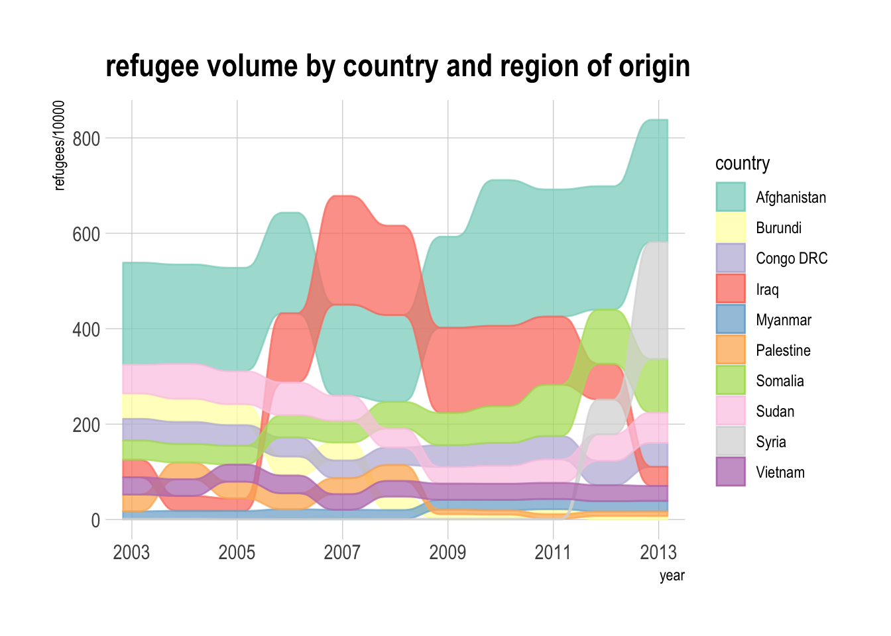
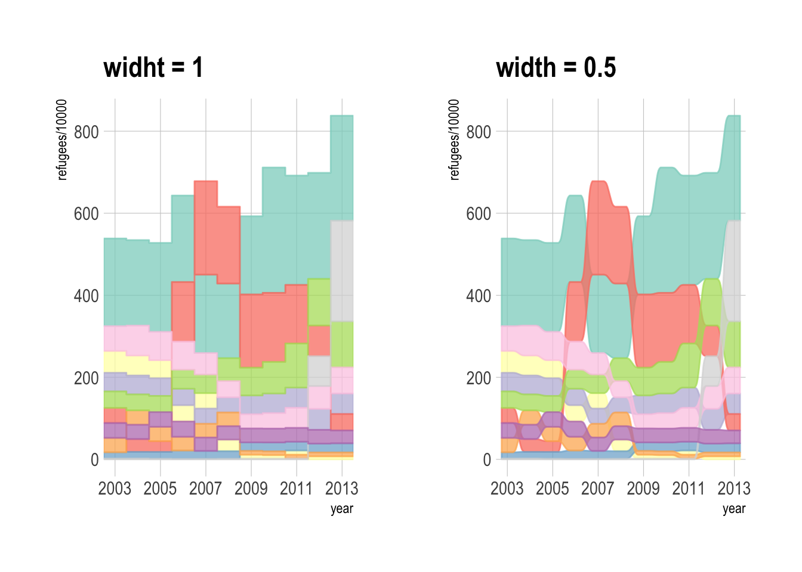

library(tidyverse)
library(ggalluvial)
library(hrbrthemes)
library(patchwork)包引入
数据准备
knitr::kable(head(city_data))| fre_city_level | job_city_level | total |
|---|---|---|
| 一线城市 | 一线城市 | 58 |
| 一线城市 | 三线城市 | 11 |
| 一线城市 | 二线城市 | 17 |
| 一线城市 | 五线城市 | 2 |
| 一线城市 | 四线城市 | 3 |
| 一线城市 | 新一线城市 | 56 |
桑基图
先直接看个例子。
p1 <- city_data %>%
ggplot(aes(axis1 = fre_city_level, axis2 = job_city_level, y = total)) +
geom_alluvium(aes(fill = job_city_level)) +
geom_stratum() +
geom_text(stat = "stratum",
aes(label = after_stat(stratum)), family = 'STXihei') +
scale_x_discrete(expand = c(0,0), limits = c('投出简历次数', '接收简历次数')) +
scale_y_continuous(expand = c(0,0)) +
labs(x = '', y = '') +
guides(y = 'none', fill = 'none') +
theme_ipsum(base_family = "STXihei", grid = '')
p1axis 表示桑基图要流经的变量。例如现在我们要看不同线级城市之间的简历数量流动情况，则 axis1 = fre_city_level 表示简历从常驻线级城市流出；axis2 = job_city_level 表示流入到职位所在的线级城市。
geom_stratum() 是给流动变量做进一步分类，例如 fre_city_level 和 job_city_level 都被分为五个线级城市。另外，geom_text() 里 stat = "stratum" 和 label = after_stat(stratum) 是 ggalluvial 内置的固定用法，照着用即可。
geom_alluvium() 中，fill 参数控制的是流动线条的颜色。fill = job_city_level 表示我们以简历流入地为观察视角，看不同线级城市各流入了多少简历。这里也可以简历流出地为观察视角，只需要设置 fill = job_city_level 即可。
p2 <- city_data %>%
ggplot(aes(axis1 = fre_city_level, axis2 = job_city_level, y = total)) +
geom_alluvium(aes(fill = job_city_level), curve_type = "linear") +
geom_stratum() +
geom_text(stat = "stratum",
aes(label = after_stat(stratum)), family = 'STXihei') +
scale_x_discrete(expand = c(0,0), limits = c('投出简历次数', '接收简历次数')) +
scale_y_continuous(expand = c(0,0)) +
labs(x = '', y = '') +
guides(y = 'none', fill = 'none') +
theme_ipsum(base_family = "STXihei", grid = '')
p2
基本用法之外，geom_alluvium() 函数还有一个 curve_type 参数，curve_type = "linear" 表示线条使用直线。除了 linear，还有 cubic、cubic、quintic 等值，但是肉眼看不出太大区别。
最后需要注意的是，制作桑基图时一般使用宽数据，操作如上所示。长数据也可，只是没有那么容易理解，这里不再演示。
凹凸图
在看文档的时候，意外发现 ggalluvial 不仅可以制作桑基图，还可以用来制作凹凸图。
# 使用 alluvial package 内置的数据集 Refugees 做测试
data(Refugees, package = "alluvial")
knitr::kable(head(Refugees))| country | year | refugees |
|---|---|---|
| Afghanistan | 2003 | 2136043 |
| Burundi | 2003 | 531637 |
| Congo DRC | 2003 | 453465 |
| Iraq | 2003 | 368580 |
| Myanmar | 2003 | 151384 |
| Palestine | 2003 | 350568 |
还是直接上个例子。
p3 <- Refugees %>%
ggplot(
aes(x = year,
y = refugees/10000,
alluvium = country)) +
geom_alluvium(aes(fill = country, colour = country),
alpha = .75, decreasing = FALSE) + # decreasing一定要设置为FALSE
scale_x_continuous(breaks = seq(2003, 2013, 2)) +
theme_ipsum(grid = 'XY') +
scale_fill_brewer(type = "qual", palette = "Set3") +
scale_color_brewer(type = "qual", palette = "Set3") +
ggtitle("refugee volume by country and region of origin")
p3
上面的 x 轴是年份，y 轴是难民数量，alluvium 表示线条的类别，这里表示难民来自哪个国家。注意要把 geom_alluvium() 中的 decreasing 参数设置为 FALSE。
另外 geom_alluvium 中的 width 参数表示不同年份变化中间的留白，width = 1 表示不需要任何留白，经试验，把值设置成 0.5 较为美观。
p4 <- Refugees %>%
ggplot(
aes(x = year,
y = refugees/10000,
alluvium = country)) +
geom_alluvium(aes(fill = country, colour = country),
alpha = .75, decreasing = FALSE,
width = 1) + # decreasing一定要设置为FALSE
scale_x_continuous(breaks = seq(2003, 2013, 2)) +
theme_ipsum(grid = 'XY') +
scale_fill_brewer(type = "qual", palette = "Set3") +
scale_color_brewer(type = "qual", palette = "Set3") +
guides(fill = 'none', color = 'none') +
ggtitle("widht = 1")
p5 <- Refugees %>%
ggplot(
aes(x = year,
y = refugees/10000,
alluvium = country)) +
geom_alluvium(aes(fill = country, colour = country),
alpha = .75, decreasing = FALSE,
width = 0.5) +
scale_x_continuous(breaks = seq(2003, 2013, 2)) +
theme_ipsum(grid = 'XY') +
scale_fill_brewer(type = "qual", palette = "Set3") +
scale_color_brewer(type = "qual", palette = "Set3") +
guides(fill = 'none', color = 'none') +
ggtitle("width = 0.5")
p4 + p5
注意事项
stat_stratum()函数报错
首次使用 stat_stratum() 函数为数据分类分层时，遇到报错： Computation failed in stat_stratum。
在 ggalluvial 的 Github Issues 里找到了解决方法：将 dplyr 升级至 1.1.0 以后版本。
流入地和流出地的分类类别不能完全一致
在桑基图的例子中，流入地和流出地都是线级城市，分类类型完全一致，首次 run 的时候报错了。这里用了一个笨办法来解决：给标签重命名，即在X线城市前面加了个空格，在图表显示的时候看不出来。
city_data <- city_data %>%
mutate(fre_city_level = fct_relevel(fre_city_level, c(' 一线城市', ' 新一线城市', ' 二线城市', ' 三线城市', ' 四线城市', ' 五线城市')))